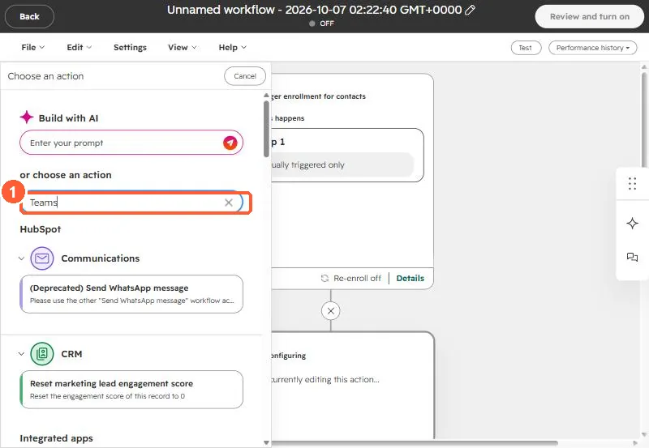
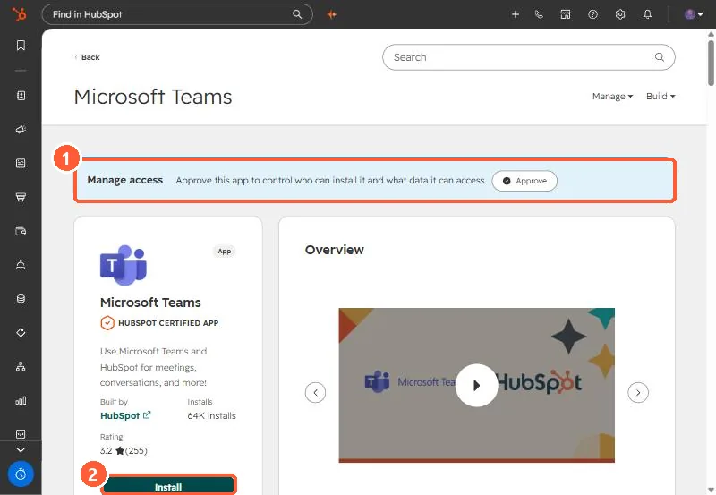

Short answer
The Team and Channel fields in the Send Microsoft Teams Notifications workflow action list Microsoft Teams teams, not HubSpot teams. If they are empty, look at the Microsoft Teams app install first. HubSpot says a user-level install only covers receiving notifications, creating tasks and tickets, and adding Teams meeting links, and that the admin-level install needs a Microsoft Global Admin. Notifications only reach users who are mapped to their Teams user and have the HubSpot app installed in Teams, and private channels are not supported. In my demo portal, with no Teams app installed, the action does not appear in the action search at all.
1. The symptom
An IT services client added the Microsoft Teams notification action to a workflow. The Team dropdown returned "There are no active teams. Please connect any." The team had HubSpot teams set up, so the error looked wrong. It was not about those teams. The field reads teams from Microsoft Teams through the integration.
In my demo portal the Teams app is not installed. Searching the action list for "Teams" in a workflow returns nothing Teams related, so the action only shows up once the app is connected.


2. Install type decides what you get
The Microsoft Teams app has two install options. HubSpot's help article says:
- Admin-level install: all features are available. You must be a Global Admin for Microsoft Teams to install it.
- User-level install: no Microsoft admin needed, but you can only receive HubSpot notifications in Teams, create tasks and tickets in Teams, and add Teams meeting links.


In this client's case the request to connect the HubSpot app went to their IT admin, and that approval was the open item when I wrote this.
3. Rules that apply after it is installed
- Only HubSpot users who are mapped to their Teams users and have the HubSpot app installed in Teams receive these notifications.
- You cannot send to private channels.
- The action's fields are Send to, Users, Team, Channel, Message, a checkbox to notify the record owner, and actions to include with the message.
4. What to do while you wait
Set Send to to users only. That path does not need a Team or Channel, but each user still has to be mapped. See why each user still has to connect.